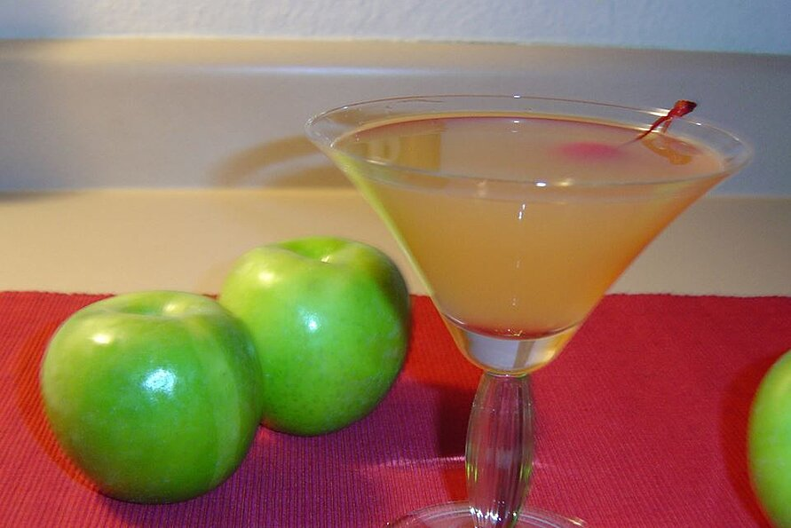

Martini

Description
This is a light, crisp, and delicious variation of an apple
martini, but made in a fall style!
Ingredients (for 1 serving)
- 4 ice cubes
- 1 1/2 fluid ounces pear vodka
- 1 1/2 fluid ounces peach schnapps
- 1 3/4 fluid ounces apple cider
- 1 1/2 fluid ounces ginger ale
- 1 apple slice for garnish
Steps
- Place the ice cubes in a cocktail shaker;
- Pour the vodka, schnapps, cider, and ginger ale over the
ice
- Cover
- Shake until outside of shaker has frosted. Make sure to pause
and slowly let the carbonated air out of the shaker once or
twice during the shaking process and also when you're done
before you pour
- Strain into a martini glass and garnish with apple slice